Fochville
'n Oorsig van Ontstaan en Ontwikkeling
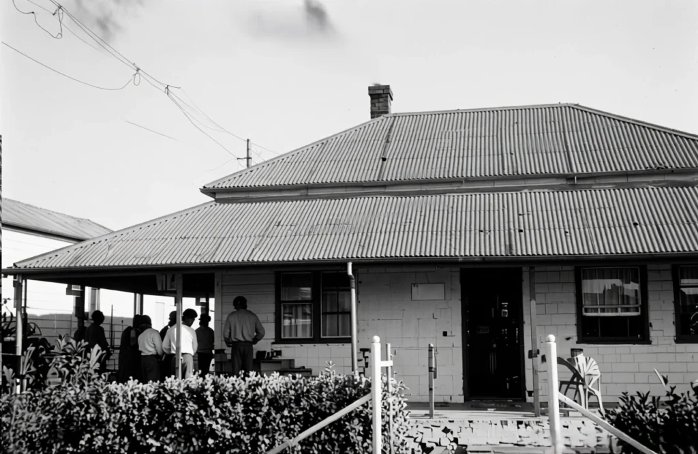
Fochville is geleë op die hoofroete tussen Johannesburg en Potchefstroom. Die dorp word omring deur die Wes-Transvaalse myndorpe Carletonville en Westonaria in die noorde, en die rustige Vrystaatse dorp Parys, sowat 40 km suid. Dit plaas Fochville binne maklike bereik van sowel die Goudstad as die Vaaldriehoek.
Met 'n tipiese Hoëveldklimaat en 'n oorvloed inheemse bome en struike, vertoon Fochville soos 'n groen oase, omraam deur die Losberg- en Gatsrandrante.
Vroeë Vestiging
Reeds in 1836 vestig die eerste boer, mnr. Harmse, hom op die plaas Buffeldoorns. In ongeveer 1852 ontvang mnr. Erasmus as eerste grondeienaar amptelike kaart en transport van die Zuid-Afrikaanse Republiek, en bou 'n woonhuis aan die voet van die Losberg.
In 1857 koop mnr. Dreyer die plaas Kraalkop, ongeveer 4 000 morg groot, vir 750 riksdaalders. Die naam "Kraalkop" verwys na die talle krale wat op die omliggende koppies aangetref is. In dieselfde tydperk word die plaas Sandfontein teen 'n soortgelyke bedrag aangekoop.
Met verloop van tyd word die omliggende plase bewoon en bewerk deur families soos die Schuttes, Dreyers, Vermaases, Du Plessis'e en Pienaars. Teen 1900 bestaan daar reeds twee skole in die omgewing: een op Buffeldoorns en een aan die voet van die Losberg.
Stigting van die Dorp
Fochville word in 1920 amptelik as dorp geproklameer. Die dorpsgebied beslaan ongeveer 900 hektaar munisipale grond, geleë op dele van die plase Leeuwspruit en Kraalkop, wat onderskeidelik aan die Pretorius-familie en mev. Bertha Bosman behoort het.
Die grond is aangekoop teen ses pond tien sjielings (R13) per morg en in erwe opgedeel. Die dorp se ontstaan word grootliks toegeskryf aan twee Joodse sakemanne, mnre. Wulfsohn en Horvitz, na wie daar vandag nog strate vernoem is.
Verskeie moontlike liggings vir die dorp is aanvanklik oorweeg, onder andere langs die spruit waar 'n opgaardam gebou kon word. Gebiede soos Weltevrede, Elandsfontein en die omgewing van die huidige stasie was ook onder oorweging.
Uiteindelik is daar tydens 'n vergadering op die plaas van mnr. Theunie Steyn op die huidige ligging besluit. Bekende inhabitants soos Piet Davidtz, Helgaardt du Preez en die broers Gawie en Johan Klein was teenwoordig. Weens siekte van die oorspronklike landmeter het mnr. Ellik Steyn die opmeting van die erwe oorgeneem.

Vroeë Groei en Ontwikkeling
Na proklamasie vestig verskeie handelaars hul besighede op die dorp. Pioniers soos Horvitz, Wulfsohn en Barney Kretchmar speel 'n sleutelrol in die vroeë ekonomiese ontwikkeling. Presidentstraat ontwikkel as die hoofhandelsentrum, en Fochville begin geleidelik groei.
In 1951 verkry die dorp munisipale status. Die eerste verkose raadslede sluit in dr. J. T. Roux (voorsitter), asook mnre. H. Ferreira, F. Postma en dr. R. E. Dunning. Binne twee jaar word elektrisiteit aangelê en munisipale kantore opgerig.
In 1962 word die gebied ingevolge wetgewing as 'n voorgeskrewe gebied verklaar. Die daaropvolgende jaar bou Western Deep Levels 250 woonhuise in die sentrale deel van die dorp, wat verdere groei aanspoor.
Namate die dorp ontwikkel, raak die plaaslike watervoorsiening onvoldoende, en daar word oorgeskakel na die Randwaterraad om aan die toenemende vraag te voldoen.
Vyftien jaar later word Fochville tot stadsraadstatus verhoog. Die eerste burgemeester was mnr. J. A. de Lange, saam met 'n span raadslede wat 'n belangrike rol in die dorp se uitbreiding gespeel het.
Openbare Dienste en Gemeenskapslewe
Soos in baie ontwikkelende nedersettings, het die dorp se groei 'n natuurlike volgorde gevolg: eers wet en orde, daarna onderwys en gesondheidsdienste.
Die eerste polisiestasie was by Kraalkop geleë. Ene Lerm was die eerste posbevelvoerder, gevolg deur konstabels Quinn en Piet Benade. Saam met vrederegter Davidtz het hulle orde gehandhaaf in 'n dorp wat aanvanklik slegs uit een winkel en 'n handjievol huise bestaan het.
Tydens 'n hofsaak het vrederegter Davidtz eens opgemerk:
"Fochville is 'n groot dorp – dit moet nog net gebou word."
Hierdie woorde sou later as merkwaardig profeties beskou word.

'n Ligter Oomblik uit die Verlede
Tussen die ernstiger dae was daar ook humoristiese voorvalle. Een so 'n verhaal handel oor "die buurman se vark".
Sersant Visser en sy buurman, Piet de Vries, het albei gesukkel met 'n vark wat hul groentetuine verniel het. Elke keer het hulle die dier oor die heining teruggejaag – elkeen oortuig dit behoort aan die ander.
Uiteindelik besluit Visser om die saak uit te klaar, net om te hoor dat Piet dieselfde versoek aan hom rig. Dit word toe duidelik: die skuldige was 'n rondlopervark wat homself op albei se groente verlustig het.
Wat van die vark geword het, bly onbekend – maar die goeie buurmanskap het beslis oorleef.
Oor die vraag of die polisie destyds lui was, sal 'n mens liewer nie spekuleer nie. Wat egter wel as feit oorvertel word, is dat konstabels maandeliks die distrik moes deurkruis en elke plaas moes besoek. As bewys van hul besoek moes hulle die plaaseienaar se register onderteken — 'n eenvoudige, maar effektiewe manier om hul teenwoordigheid te bevestig.
Die Eerste Dorpenaars
Wat dorpsontwikkeling betref, word oom Koos en tant Malie Schoeman as die eerste dorpenaars beskou. Alhoewel hul huis in Skoolstraat geleë was, het oom Koos boorde, tuine en landerye aangelê tussen 5de-, 7de- en Lusernstraat.
Hy het onder meer tabak verbou en water met 'n donkiekar uit die Loopspruit aangery — 'n toneel wat vandag amper soos 'n skildery uit 'n ander era voel. Sy granate het hy aan die plaaslike Joodse handelaars verkoop, aangesien dit glo goed vir die hart was.
Oom Koos was ook die dorp se smid ("blacksmith"), en waens wat herstel moes word, is op die plein oorkant die hedendaagse droogskoonmakers geparkeer. Later moes hy egter die waens daar verwyder, aangesien hulle tydens politieke byeenkomste beskadig is — moontlik meer as net vurige toesprake wat daar plaasgevind het.
Hul seun, Japie Schoeman (gebore 5 Maart 1921), was die eerste kind wat in Fochville gebore is.
Nadat oom Koos leiwaterstelsels aangelê en boorgate gesink het, kon hy op groot skaal groente aan die dorp voorsien. Bekend vir sy vriendelikheid en opgewekte geaardheid, het hy daagliks met sy trollie en twee perde aflewerings by die hotel en huise gedoen.
Sport en Kattekwaad
Fochville het selfs sy eie unieke sport gehad: gewigstoot met 'n klip, oftewel "gewigsvoet". Op die plein waar die poskantoor vandag staan, het jong seuns mekaar uitgedaag om hul krag te wys. Die klippe was beslis nie klein nie, maar buiten 'n paar blou toonnaels hier en daar, was die sport verrassend veilig.
Kattekwaad het natuurlik ook nie ontbreek nie. Dit het ingesluit speletjies soos toktokkie, vrugte steel, en selfs die steel van mnr. Liebsen se hoenders — net om dit weer aan hom by sy winkel te verkoop!
Hierdie onderneming het egter tot 'n einde gekom toe hulle een dag sy haan aan hom probeer verkoop het, en hy prontuit verklaar het dat hy "nie so 'n gemors-ding op sy werf wil hê nie". 'n Plan wat uiteindelik sy eie stert gevang het.
Humor en Misverstande
Klein misverstande het ook hul deel van humor gebring. Oom Van Deventer, die haarkapper en 'n wewenaar, het eendag besluit om tant Annie, 'n weduwee, te beïndruk met 'n tuisgebakte koek.
Hy stuur dit saam met 'n knipoogboodskap — maar die boodskapper kon nie die bedoeling snap nie. Die koek beland toe by 'n ander ou wewenaar, wat sonder huiwering die helfte opeet en die res aan sy buurman stuur.
Tant Annie? Sy het nooit eers 'n krummel gesien nie.
Vervoer en Vooruitgang
Vervoer in Fochville vertel sy eie verhaal van ontwikkeling: van donkiekarre wat water uit die spruit aangery het, tot donkies wat soms verkeerdom ingespan was en elk hul eie rigting probeer kies het.


Met verloop van tyd het grondpaaie plek gemaak vir teerpaaie, en Model T-Fords vir luukse sedans.
Danksy die inisiatief van wyke mnr. C. Brits, destydse L.V. vir Losberg, het daar reeds in 1928 'n spoorverbinding tussen Potchefstroom en Fochville tot stand gekom. Die lyn is later verleng na Vereeniging, opgegradeer en geëlektrifiseer.
Op Maandag, 25 Oktober 1965, was Fochville in rep en roer met die opening van die nuwe stasiegebou. Die dorp het gegons soos 'n byenes. Met minister B. J. Schoeman aan die stuur het die seremoniële trein die stasie binnegestoom, verwelkom deur tamboermeisies van Laerskool Fochville.
Die seremoniemeester was mnr. S. G. J. van Niekerk, terwyl minister N. Diederichs die verrigtinge bygewoon het en minister Schoeman die amptelike toespraak gelewer het.
'n Tradisie wat Bly Leef
Fochville se invloed het selfs verder gestrek as sy eie grense. By die Onderwyskollege in Potchefstroom (POTE) het 'n unieke tradisie ontstaan: wanneer daar nagereg bedien word, verklaar senior studente speels:
"Die eerstejaars is vandag op Fochville."
Dit beteken eenvoudig dat geen eerstejaar daardie dag nagereg kry nie!
Volgens ou studente bestaan hierdie tradisie al dekades lank — 'n klein stukkie Fochville wat sy spore in studentelewe nagelaat het.
Fochville: Die Naam… of Dalk Nie?
Fochville se naam dra 'n internasionale erfenis — een wat teruglei na die Europese slagvelde van die Eerste Wêreldoorlog.
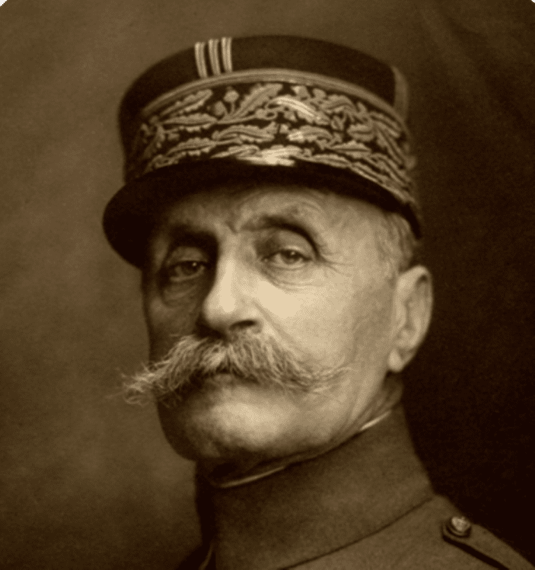
Ferdinand Foch was 'n Franse maarskalk en die bevelvoerende offisier van die Geallieerde magte teen die einde van die oorlog. Hy is gebore op 2 Oktober 1851 en oorlede op 20 Maart 1929. Sy oorskot rus onder die koepel van Les Invalides in Parys, waar ook Napoleon Bonaparte sy laaste rusplek het.
'n Indrukwekkende standbeeld van Maarskalk Foch — die man na wie Fochville vernoem is — staan vandag nog op 'n plein in Londen, Engeland, as 'n stille wag oor sy nalatenskap.

'n Militêre Loopbaan vol Kontraste
Foch se militêre loopbaan het in 1870 begin toe hy as offisier aangestel is. Teen die ouderdom van 26 was hy reeds 'n kaptein in die kavallerie. Gedurende sy diens het hy in uiteenlopende omgewings geveg, insluitend die woestyne en bosse van Noord-Afrika.
Later het hy as bevelvoerder van verskeie militêre afdelings gedien en ook as militêre instrukteur opgetree. Sy loopbaan is gekenmerk deur interessante teenstrydighede — van streng militêre dissipline tot 'n persoonlike belangstelling in die mistieke.
Hy het ook sy ervarings neergeskryf, en twee van sy oorlogsherinneringe is later in sowel Frans as Engels gepubliseer.
'n Naam Onder Debat
Ten spyte van die internasionale prestige wat die naam "Fochville" gedra het, was nie almal in die dorp daarmee tevrede nie.
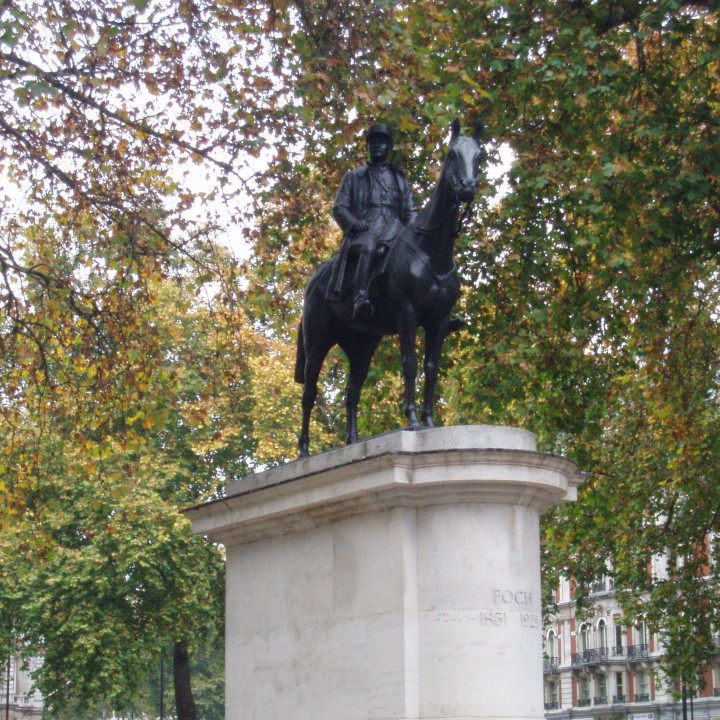
In 1938 is daar 'n ernstige poging aangewend om die dorp se naam te verander. Tydens 'n vergadering van die Eeufeeskomitee op 1 November 1938 is besluit dat 'n nuwe naam oorweeg moet word.
Verskeie voorstelle is op die tafel geplaas:
Louis Botha
Eeufeesdorp
Paul Kruger
Losberg
Voortrekker
Bloemensteyn
Losbergdorp
Na bespreking is daar uiteindelik op die naam "Losberg" besluit.
Mnre. P. A. Vermaas, G. P. Brits (L.V.) en ds. G. Nel is toe afgevaardig na Pretoria om die saak verder te bevorder — amper soos 'n klein diplomatieke sending uit die hart van die Wes-Transvaal.
Die Besluit van Bo
Die voorgestelde naamsverandering het egter nooit gerealiseer nie.
Op 11 November 1939 is die aansoek deur die provinsiale owerheid afgekeur, op grond van die Registrasie van Aktes-wet van 1937.
En so het die naam Fochville gebly — amper asof die geskiedenis self besluit het om nie die bladsy om te slaan nie.
Gedenkwaardighede: Spore van die Verlede
Fochville is geleë in 'n streek met 'n besonder ryk geskiedenis — iets wat duidelik sigbaar is in die talle murasies, plekname, gedenktekens en monumente wat die landskap deurtrek.
Vroeë Spore en Konflik
In die rante tussen Losberg en Gatsrand is die oorblyfsels van Matabelekrale steeds sigbaar. Hierdie strukture dateer waarskynlik uit die tyd toe Mzilikazi (Silkaats) en sy mense noordwaarts gevlug het voor die magte van Shaka en Dingane.
Dit was ook in hierdie gebied waar die Voortrekkers met die Matabele slaags geraak het. Ná die Slag van Vegkop het die Matabele, saam met gesteelde vee, na Mosega uitgewyk. In die daaropvolgende skermutseling is hulle verslaan en die vee is teruggebring.
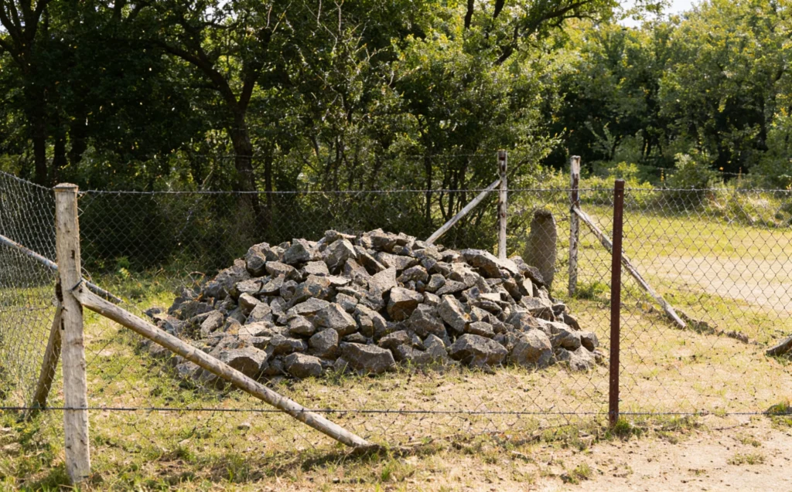
Die plaas Deelkraal, ongeveer 14 km wes van Fochville, het sy naam gekry van die verdeling van hierdie vee. Onopgeëiste diere is gemerk deur een oor stomp te sny en na 'n aangrensende plaas geneem — wat later die naam Stompoorfontein gekry het.
Op mnr. Thys Basson se plaas, Elandsfontein, is daar ook 'n klipfort wat uit hierdie vroeë konfliktydperk dateer.
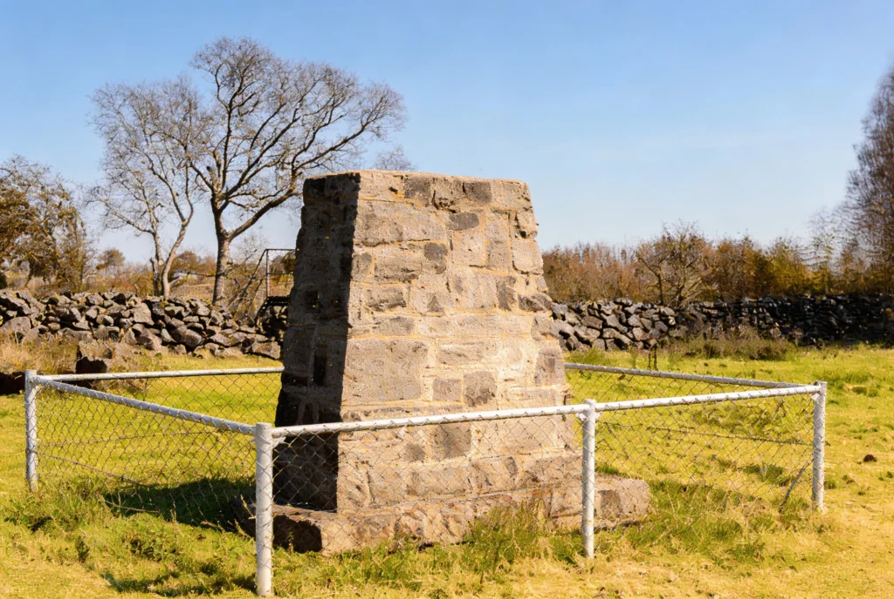
In dieselfde omgewing is 'n graf, vermoedelik van 'n seun uit die Harmse-familie, wat tragies gesterf het nadat 'n wa oor hom gery het — 'n klein, stille herinnering aan die harde werklikheid van pionierslewe.
Vroeë Nedersettings en Herinneringe
Reeds in 1836 vestig die Harmse-gesin hulle op die plaas Buffeldoorns. Die naam is afgelei van die tragiese dood van die vader, wat deur 'n buffel vertrap is.
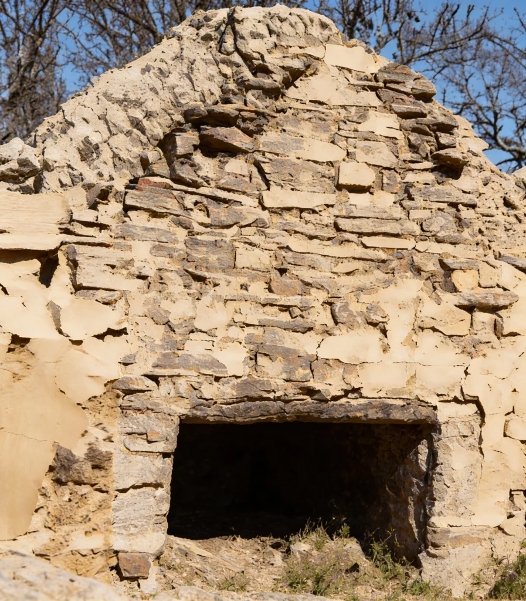
Naby staan ook 'n historiese huis van die Schutte-familie, gebou in 1869 en vandag nog bewoon — 'n lewende skakel met die verlede.
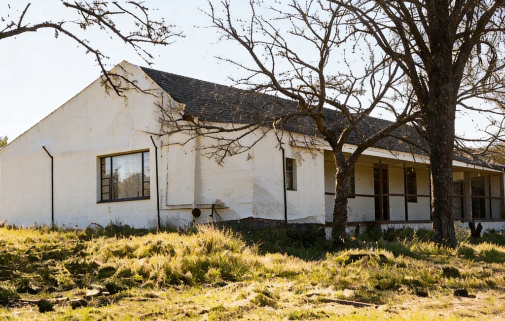
Die Ossewatrek van 1938
'n Besondere oomblik in die dorp se geskiedenis was die simboliese Ossewatrek van 1938, onder leiding van Henning Klopper, destydse Speaker van die Volksraad.
Die trek het die fort, grafte en historiese wonings besoek voordat dit omstreeks 3 Desember 1938 deur Fochville beweeg het.

As gedenkteken van hierdie besoek is die Eeufeesmonument voor die Landdroskantore opgerig. Die monument is gebou op die sementblad waarin die wiel- en osse-spore van die Magrietha Prinsloo-wa vasgelê is.
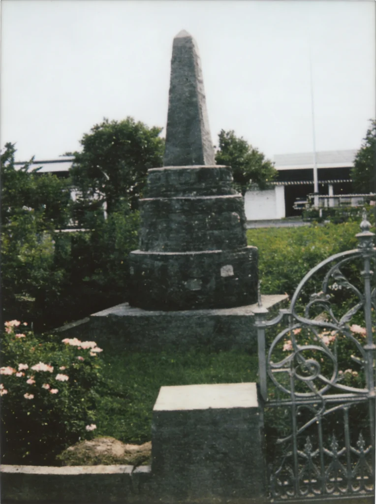
Die basis bestaan uit klippe wat deur feesgangers op die dag self gepak is — elke klip met die naam van sy bydraer daarin gegraveer. Dit maak die monument nie net 'n simbool nie, maar 'n kollektiewe handtekening van 'n gemeenskap.
Die Anglo-Boereoorlog se Erfenis
Tekens van die Anglo-Boereoorlog is ook volop in die omgewing. Die bekendste hiervan is die Danie Theron-monument.

Hierdie monument is in 1950 deur die Voortrekkerbeweging opgerig op die plek waar Danie Theron gesneuwel het. Dit is onthul op 4 September 1950 — presies 50 jaar en 4 dae ná sy dood.
Die 26 meter hoë struktuur bestaan uit 'n suil van 50 ringe, wat die tydperk tussen sy dood en die oprigting simboliseer. Die metaalgedeelte verteenwoordig die vlam van vryheid — 'n simbool van die Boere se strewe na onafhanklikheid.
Volgens oorlewering was mev. Mara Malherbe die laaste persoon wat vir Theron 'n koppie koffie gegee het voordat hy en Burger Nel na hul noodlot vertrek het.
Slagvelde en Fortifikasies
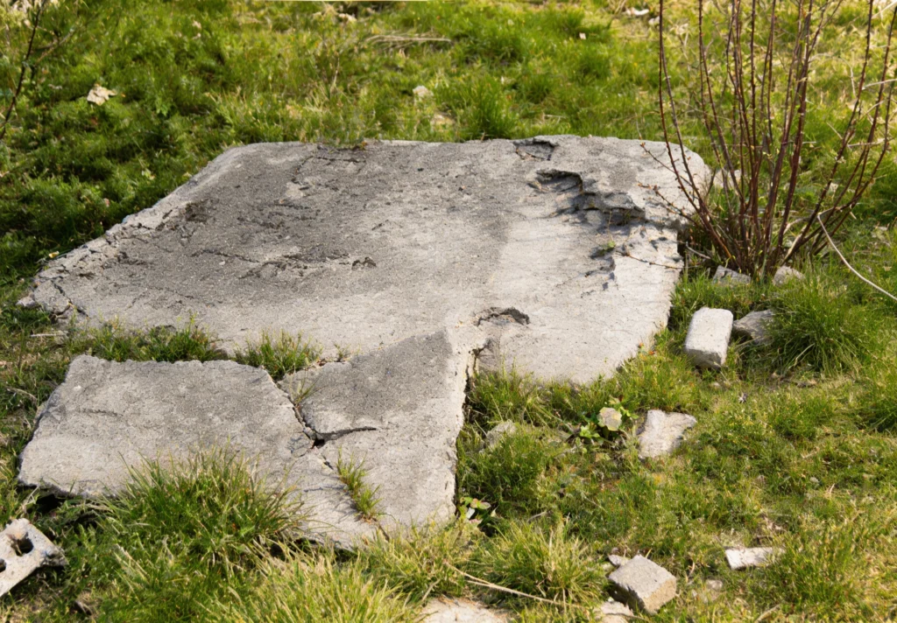
Ongeveer 2 km vanaf die Sandfontein–Vereeniging-pad het die Slag van Modderfonteinnek plaasgevind. Onder leiding van generaal Smuts het die Boeremagte die versterkte skanse op 31 Januarie 1901 met minimale lewensverlies verower. Twee dae later het die Britse mag 'n teenaanval deur voetsoldate probeer uitvoer, maar moes die rant ontruim ná 'n hewige bombardement.
Op mnr. Barend Vermaas se plaas, Renosterfontein, lê 'n klipfort op die hoogste punt van Klein Losberg.
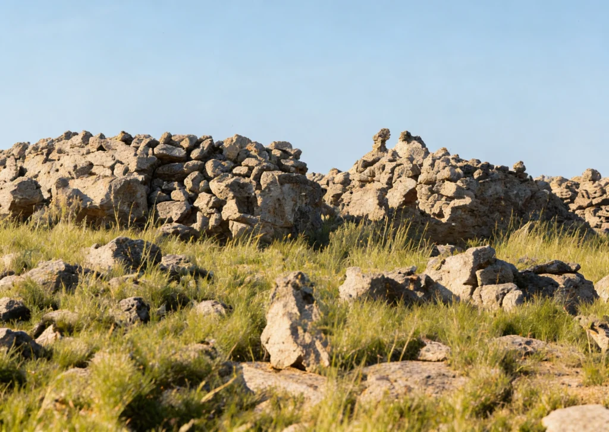
Die fort is tot sy oorspronklike toestand gerestoureer, en tydens die werk is verskeie Lee-Metford-patrone en doppies, asook 'n "Eno"-bottelproppie, gevind. Opvallend van die uitleg is die loopgrawe wat met klippe gepak is om 'n goeie uitsig oor die noordelike helling van die kop te verseker.
'n Kerk met 'n Verhaal
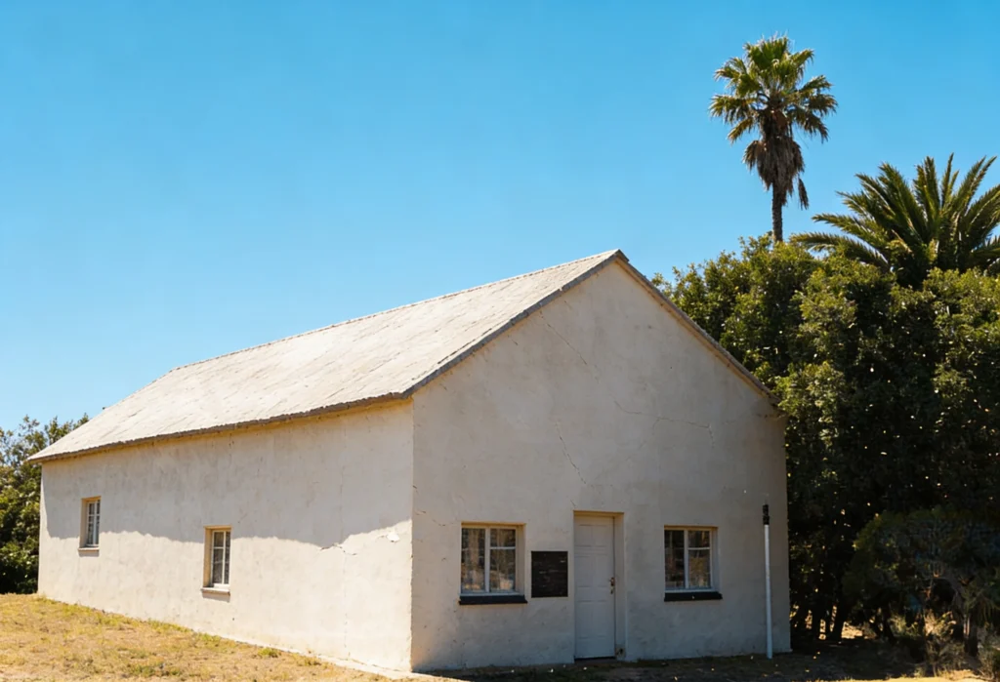
Nog 'n historiese plek in die omgewing is Jachtfontein, waar 'n kerkie vóór die Anglo-Boereoorlog deur J. T. ("Tommie") Martins gebou is. Die kerkie is uit dankbaarheid opgerig nadat die Here hom van sy worsteling verlos het.

Hoewel dit later afgebrand is, is dit herbou en op 6 April 1905 heropen. Vandag word dit deur die susterskerkie bedien en dienste word elke tweede Sondag daar gehou.
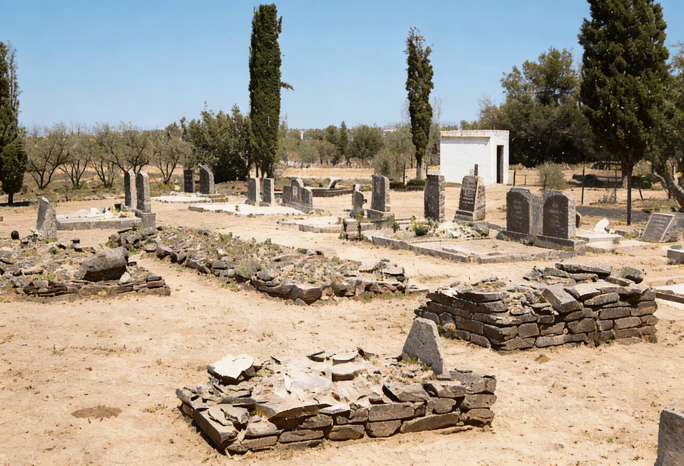
Die Ossewatrek se Nalatenskap
Die Magrietha Prinsloo-wa het ook Jachtfontein, sowat 20 km oos van Fochville, op 5 Desember 1938 besoek. Daar kan die oorspronklike spore steeds gesien word.